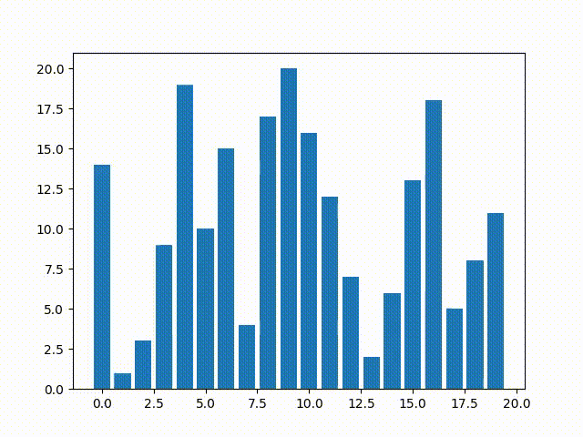
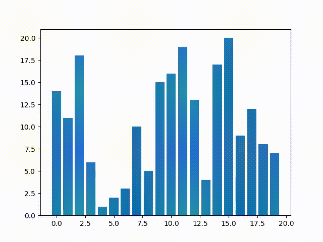
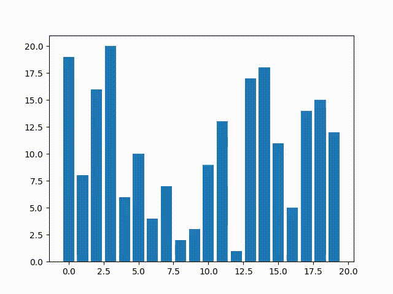
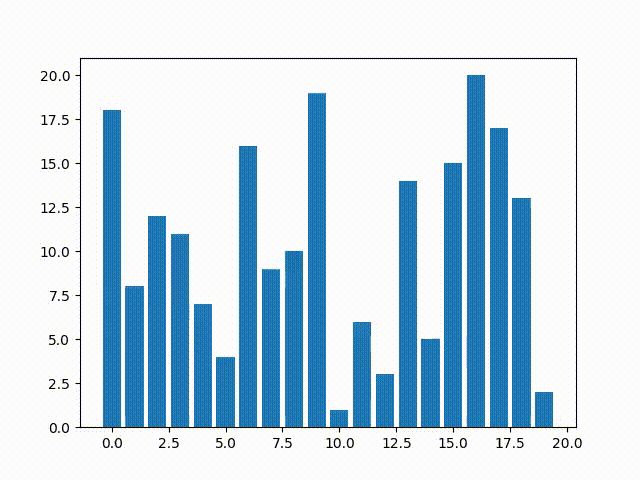

Context Completes the Rule#
March 2025
#sortingIntroduction#
Systems exhibit goal-directedness not because of what they’re made of, but because of how their internal parts and rules interact in a broader context.
— Levin, Classical Sorting Algorithms as a Model of Morphogenesis
This notebook is an exercise in epistemology and perspective. It explores the idea that a rule’s causal power is context-dependent—you can’t understand it in isolation, only in interaction with the environment that constrains and enables it.
Levin shows that simple algorithms, when distributed across many agents, can produce robust, goal-directed behavior—even when individual agents are error-prone, memoryless, or acting with incomplete information.
Here, we replicate and extend his results using sorting algorithms. We show that distributing a rule like “swap if greater” across many agents leads to:
Goal-directedness
Fault tolerance
Convergence without centralized control
Even when agents are noisy or follow different rules, the system still tends toward order. Robustness emerges from interaction, not from explicit top-down engineering.
This raises bigger questions that many of us are working on:
Can we predict what a rule will do in a system of scale X and structure Y?
Do we always have to simulate? Or are there general dynamical principles we can learn?
In software engineering, we spend massive resources building fault tolerance explicitly. But what if, as shown here, the right rules in the right context give us robustness for free?
Understanding these dynamics is more than an academic curiosity—it’s a design principle with real-world implications.
Setup#
import random
import numpy as np
import matplotlib.pyplot as plt
import matplotlib.animation as animation
from IPython.display import Video
def bubble_sort(arr):
n = len(arr)
snapshots = [arr.copy()] # capture initial state
for i in range(n):
for j in range(0, n - i - 1):
if arr[j] > arr[j + 1]:
arr[j], arr[j + 1] = arr[j + 1], arr[j]
snapshots.append(arr.copy())
return snapshots
def save_sort_animation(snapshots, filename="sort_demo.mp4"):
fig, ax = plt.subplots()
bar_rects = ax.bar(range(len(snapshots[0])), snapshots[0])
ax.set_ylim(0, max(snapshots[0]) + 1)
def update(frame):
for rect, h in zip(bar_rects, snapshots[frame]):
rect.set_height(h)
return bar_rects
ani = animation.FuncAnimation(fig, update, frames=len(snapshots), interval=200, repeat=False)
ani.save(filename, writer="ffmpeg", fps=5)
plt.close(fig)
Behavior of Traditional Top Down Bubble Sort#
Top down goal: “sort this list”
The swap rule is applied serially (one pair at a time).
arr = random.sample(range(1, 21), 20) # use the same array for consistency
snapshots = bubble_sort(arr.copy())
save_sort_animation(snapshots, "sort_demo.mp4")
# Video("sort_demo.mp4") # note to self: converted this vid to gif for jupyterbook compatibility. Uncomment if running locally

Decentralization of the simple swap rule still leads to convergence (a “goal”)#
Instead of treating sorting as a top‑down process, we now frame each array element as a local agent executing its own simple goal—“nudge me toward correct order”
def decentralized_sort(arr, passes=100):
n = len(arr)
snapshots = [arr.copy()]
for _ in range(passes):
for i in range(0, n - 1, 2): # even-indexed pairs
if arr[i] > arr[i + 1]:
arr[i], arr[i + 1] = arr[i + 1], arr[i]
snapshots.append(arr.copy())
for i in range(1, n - 1, 2): # odd-indexed pairs
if arr[i] > arr[i + 1]:
arr[i], arr[i + 1] = arr[i + 1], arr[i]
snapshots.append(arr.copy())
return snapshots
arr2 = random.sample(range(1, 21), 20)
snapshots2 = decentralized_sort(arr2.copy())
save_sort_animation(snapshots2, filename="decentralized_sort.mp4")
# Video("decentralized_sort.mp4")

Noise, antagonists, and imperfections in the decentralized system still lead to convergence#
def imperfect_distributed_sort(arr, passes=100, p_correct=0.9):
"""
Simulates decentralized sorting where each agent has a chance to behave incorrectly.
:param arr: list to sort
:param passes: number of iterations
:param p_correct: probability that a swap/comparison is performed correctly
"""
import numpy as np
n = len(arr)
snapshots = [arr.copy()]
for _ in range(passes):
# Even step
for i in range(0, n - 1, 2):
if np.random.rand() < p_correct and arr[i] > arr[i + 1]:
arr[i], arr[i + 1] = arr[i + 1], arr[i]
snapshots.append(arr.copy())
# Odd step
for i in range(1, n - 1, 2):
if np.random.rand() < p_correct and arr[i] > arr[i + 1]:
arr[i], arr[i + 1] = arr[i + 1], arr[i]
snapshots.append(arr.copy())
return snapshots
arr3 = random.sample(range(1, 21), 20)
snapshots3 = imperfect_distributed_sort(arr3.copy(), p_correct=0.85)
save_sort_animation(snapshots3, filename="imperfect_sort.mp4")
# Video("imperfect_sort.mp4")

Chimeric sorting behaviors still lead to convergence#
What happens when individual agents within the array population follow different sorting rules?
Here, we introduce heterogeneity by assigning different agents one of several strategies:
Classic bubble sort rule
Inverse rule (e.g., sort backward)
Noisy/chaotic behavior (swap randomly)
Passive behavior (never swap)
This simulates competitive or cooperative dynamics among interacting “cell types,” reflecting diversity in biological systems or agent-based environments.
def chimeric_sort(arr, passes=100, strategies=None):
"""
Assigns each index an agent type and simulates sorting via chimeric strategies.
:param arr: array to sort
:param passes: number of rounds
:param strategies: list of strategies for each index. Must match length of arr.
"""
n = len(arr)
if strategies is None:
strategies = np.random.choice(['bubble', 'reverse', 'random', 'passive'], size=n)
assert len(strategies) == n, "Each element must have a strategy"
snapshots = [arr.copy()]
for _ in range(passes):
for i in range(n - 1):
s = strategies[i]
if s == 'bubble' and arr[i] > arr[i + 1]:
arr[i], arr[i + 1] = arr[i + 1], arr[i]
elif s == 'reverse' and arr[i] < arr[i + 1]:
arr[i], arr[i + 1] = arr[i + 1], arr[i]
elif s == 'random' and np.random.rand() < 0.3:
arr[i], arr[i + 1] = arr[i + 1], arr[i]
# 'passive' does nothing
snapshots.append(arr.copy())
return snapshots, strategies
arr4 = random.sample(range(1, 21), 20)
snapshots4, strategies4 = chimeric_sort(arr4.copy(), passes=100)
save_sort_animation(snapshots4, filename="chimeric_sort.mp4")
# Video("chimeric_sort.mp4")

Take-Aways#
1. Simple Rules Can Produce Complex, Adaptive Behavior
Even trivial algorithms (like bubble sort) can display robust, flexible dynamics when distributed or perturbed.
This echoes biological systems: local rules, embedded in a supportive structure, produce global order without centralized planning.
2. Context Changes Causality
The same rule (if a[i] > a[i+1]: swap) behaves differently depending on:
Execution order (serial vs parallel)
Agent fidelity (perfect vs noisy)
Agent diversity (homogeneous vs chimeric)
This shows that causality is not intrinsic to the rule, but emerges from the system’s structure—just like in developmental biology or cognition.
3. Resilience Emerges Without Explicit Design
Imperfect and chimeric systems still converge—despite having faulty, antagonistic, or passive agents.
This mimics biological regeneration or healing, where function recovers despite local failure, without needing a global repair protocol.
4. System Level Goal-Directedness Occurs without Explicit Design
These systems look like they’re “trying” to sort—even when they have no global goal.
This aligns with Levin’s argument: teleology can emerge from local interactions—the appearance of purpose without purpose being hard-coded.
5. Heterogeneous Systems Can Self-Organize
Systems made of conflicting rules and behaviors (bubble, reverse, passive, random) can still self-organize into order.
This highlights the power of collective dynamics: order doesn’t require uniformity.